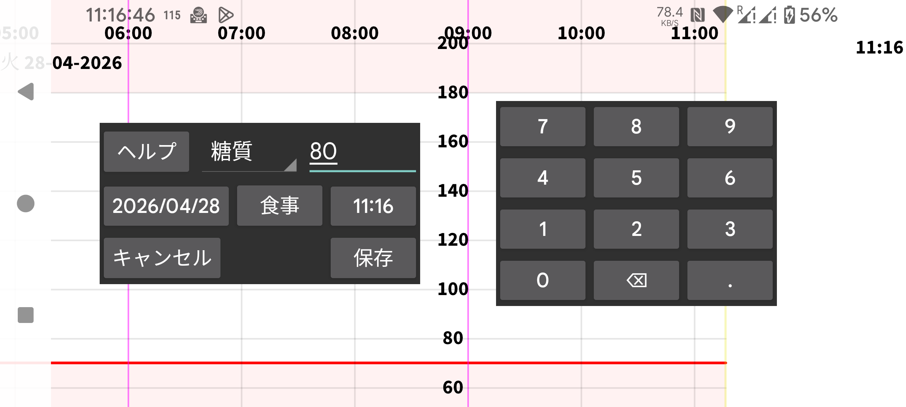

ar de es hi it ja ko nl pl ru tr uk uz zh en
新規記録を使うと、任意のラベルに紐づく数値を入力できます。ラベルは左メニュー → 設定 → 記録のラベルで設定できます。特定のラベルで入力された 記録 は、ラベルによって決まる一定の高さでグラフに表示されます。
記録は後から長押しで変更できます。左中メニュー → 一覧の入力済み記録一覧から選択することもできます。
NFC ペンをスキャンすることで NovoPen® 6 や NovoPen Echo® Plus から インスリン 用量データを受信することもできます。スキャン後、Juggluco でどのラベルに用量を保存するかを変更でき、特定の日時 以降 の用量に制限することもできます。ペンのメモリに数百件の用量がある場合、Juggluco が NFC でそれらをすべて受信するまでに 30 秒以上かかることがあります。
一部の血糖測定器は指先穿刺の血糖測定値を Bluetooth 経由で Juggluco に送信できます。左メニュー → 設定 → データ交換 → 血糖測定器を参照してください。
左メニュー → 設定 → 記録のラベルでは、食事の炭水化物量をどのラベルで入力するかも指定されています。新規記録 では、このラベルに対して 食事 ボタンが表示されます。この 食事 ボタンをタップすると、食事を構成要素から指定できる画面に進みます。炭水化物量が計算されるか、または炭水化物量を指定して必要な食材の分量が計算されます。
除外: 血糖値が上昇または低下している、もしくはセンサーがまだウォームアップ中であるため、血糖測定値を校正から除外します。